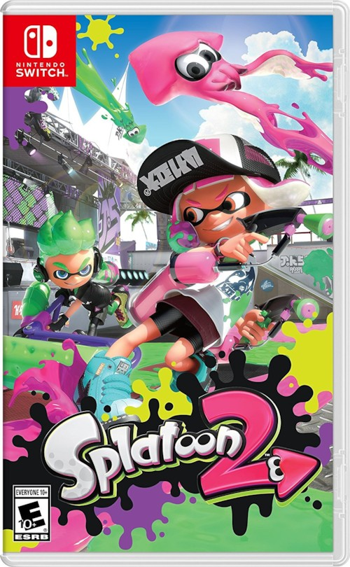

- SPLATOON
- SPLATOON2
SPLATOON2
스플래툰의 후속작이자 스플래툰 시리즈의 두 번째 타이틀.
플랫폼은 Nintendo Switch이며 2017년 7월 21일 발매되었다.

- 어시스트가 생겼다. 한 플레이어가 때려서 체력이 깎인 상태의 플레이어를 다른 플레이어가 처치하면 처음 때렸던 플레이어에게 어시스트가 들어온다. 결과 화면에서는 킬 수와 합쳐 나온다. 어시스트를 하면 킬 아이콘처럼 팍 터지는 모양이 아닌 둥근 모양으로 처치 표시가 뜬다.
- 기존의 멀티플레이 모드는 대부분 그대로 가져왔으나 약간의 변경점이 생겼다. 자세한 것은 모드 문서 참고.
- 태그 매치는 리그 매치로 바뀌었다. 배틀 도장과 프라이빗 매치는 로컬전으로 통폐합되었다.